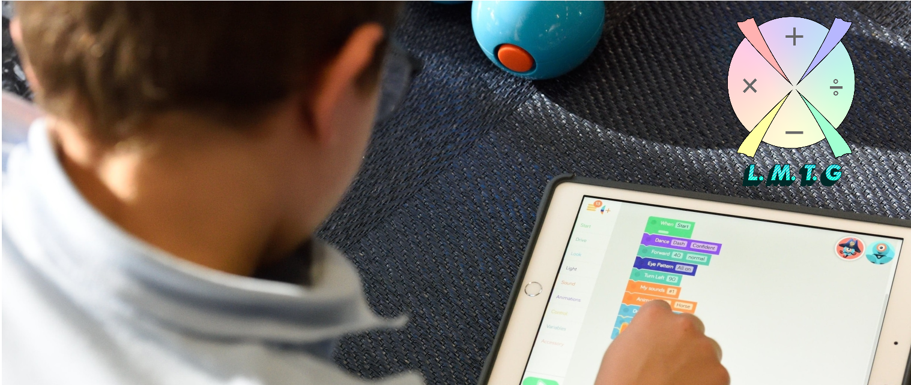

Nos alegra mucho que quieran trabajar con nosotros, pero antes de que ingreses queremos que sepas
a que mundo tan maravilloso vas a poder acceder a través de tu pantalla.
Para empezar, nosotros trabajamos con el grado tercero específicamente porque deseamos que a
través de este grado se afiancen conocimientos básicos y aprendemos otros nuevos que se tocan en
este curso, tales como la suma, la resta y la multiplicación; Y tanto niños como padres y maestros
han luchado durante mucho tiempo para encontrar el gusto de los niños a la matemática y nosotros
creemos que es porque ni en las más básicas operaciones han logrado agradarles y nuestro objetivo es
que a través de los juegos ellos puedan entender que la matemática si puede ser
divertida.
Pero no solo es una herramienta de enseñanza muy útil para los niños, sino también para los
maestros y padres de familia, esto se logra con el trabajo de roles que trabaja la página, es decir,
cuando usted a continuación se registre le van a preguntar, si es maestro, estudiante o acudiente. Y
en el botón superior donde dice herramientas dependiendo de ese rol le aparecerá
las funciones que le corresponden, por ejemplo al maestro le dirá el avance del niño respecto a los
juegos y dependiendo de ese avance le dará unas guías complementarias, de esta manera no se
calificaran a todos los niños de la misma forma y también el profesor tendrá la posibilidad de ver
que deficiencias de cada niño debe atacar y las notas saldrán del promedio del avance de las guías y
los juegos que haya avanzado . En el caso de los padres, a ellos se les preguntara la tarjeta de
identidad de su hijo, y en el caso que tenga tres niños en el mismo curso le será más fácil ver el
progreso de cada uno de sus hijos, también al tener la visualización del avance y las notas podrá
haber una ayuda desde casa y el niño contara con la ayuda del maestro, del padre de familia y de
aplicación.
En el botón superior donde dice sobre nosotros encontrara las fotos de las
creadoras de esta página, también vera los niños que hicieron todo el proceso con nosotros para que
se puedan suplir las necesidades de los niños, es decir, ellos nos dijeron su opinión acerca de las
matemáticas, los colores que más les gustaban, ellos escogieron los juegos que preferían y por
ultimo ellos aprobaron nuestra aplicación. También vera las fotos de los maestros que nos
colaboraron para hacer esta página en torno a la enseñanza.
Para finalizar, me gustaría decirle a todos los que se dieron la oportunidad de leer este texto y
los que vayan a registrarse a nuestra página, que nuestro principal interés es mostrarles a los
niños que las matemáticas siempre van a estar en sus vidas, pero, no necesariamente tiene que ser
una torta y que calificar dos personas que tienen diferentes capacidades no es la forma de enseñar,
pues puede frustrar al niño y resignarlo el resto de su vida, por eso consideramos que nuestra
página puede ofrecerle la mejor manera de aprender y enseñar la matemática.
Esperamos que la disfrute.